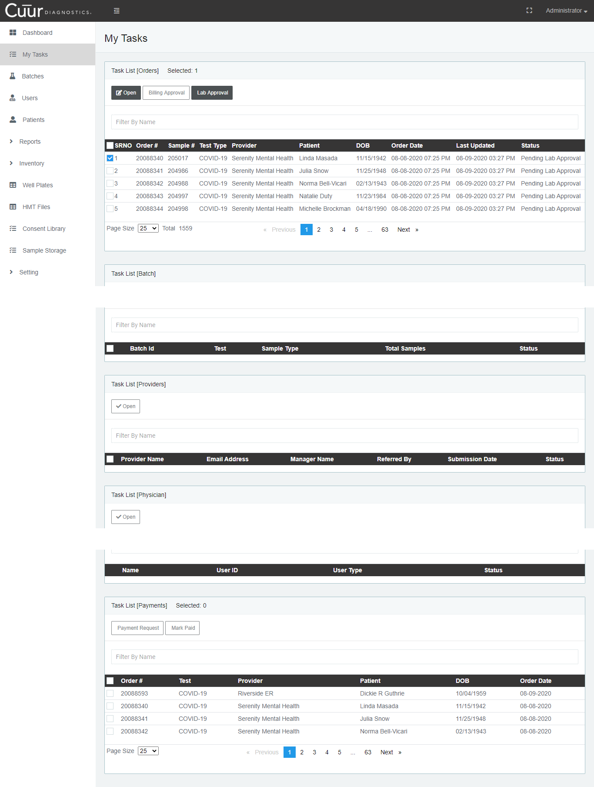

1
Once you click on the"My Tasks" from the sidebar, below screen will be displayed.
2
In this particular component you will see the "Task List".
3
You can see here that in "Task List" buttons at the top are not active but once you select any task from the list they become active.
